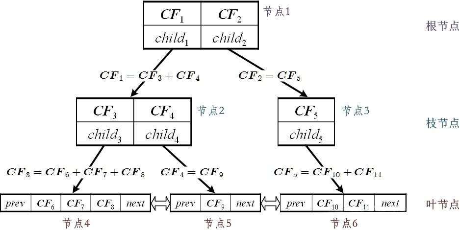

BIRCH算法是一种凝聚层次聚类算法，它的全称是Balanced Iterative Reducing And Clustering Using Hierarchies，中文名也就是利用层次方法的平衡迭代规约和聚类。在大多数情况下，BIRCH可以只扫描一次数据集就可以完成聚类，这也使它可以在数据挖掘算法中处理大数据。BIRCH的作者声明BIRCH算法是数据领域第一个可以有效处理噪音的聚类算法。
BIRCH算法通过构建一个CF（Clustering Feature）树来实现，首先来介绍一下CF和CF树
CF（聚类特征）
CF(Clustering Feature 聚类特征)，当给定一个N个d维的数据 \(X_1,X_2,...X_N\)，CF可以被定义成一个元组，即 \(\overrightarrow {CF}=(N,\overrightarrow{LS},\overrightarrow{SS})\) ，其中N表示元素的个数，\(\overrightarrow{LS}=\sum_{i=1}^N \overrightarrow X_{i}\)，它是所有元素各维度上的线性和，\(\overrightarrow{SS}=\sum_{i=1}^N (\overrightarrow X_{i})^2\)是所有数据点各维度上的平方和。
通过一个简单例子来说明：例设一个数据集有3个数据点 (2,5) 、 (3,2) 和 (4,1) ，那么此时
\[
N=3\\
\overrightarrow{LS}=(2+3+4,5+2+1)=(9,8)\\
\overrightarrow{SS}=(2^2+3^2+4^2,5^2+2^2+1^2)=(29,30)
\]
使用CF元组的好处在于，很多性质都可以通过这三个特征来表示，比如：
簇中心：
\[
\begin{align*}
\overrightarrow C&=\frac{\sum_{i=1}^N \overrightarrow X_i}{N}\\
&=\frac {\overrightarrow{LS}}{N}
\end{align*}
\]
簇半径：
\[
\begin{align*}
R&=\sqrt{\frac{\sum_{i=1}^{N} (\overrightarrow C-\overrightarrow X_i)^2}{N}}\\
&=\sqrt{\frac{\sum_{i=1}^N (\overrightarrow C^2+\overrightarrow X_i^2-2\overrightarrow X_0\overrightarrow X_i)}{N}}\\
&=\sqrt{\frac{N\overrightarrow C^2+\overrightarrow{SS}+2\overrightarrow C\overrightarrow{LS}}{N}}
\end{align*}
\]
簇直径：
\[
\begin{align*}
D&=\sqrt{\frac{\sum_{i}^N \sum_{j}^N (\overrightarrow{X_i}-\overrightarrow{X_j})^2}{N(N-1)}} \\
&=\sqrt{\frac{\sum_{i}^N \sum_i^N(\overrightarrow{X_i}^2+\overrightarrow{X_j}^2-2\overrightarrow X_i \overrightarrow X_j)}{N(N-1)}} \\
&=\sqrt{\frac{\sum_i^N(N\overrightarrow X_i^2+\overrightarrow{SS}-2\overrightarrow X_i \overrightarrow{LS})}{N(N-1)}}\\
&=\sqrt{\frac{N\sum_i^N(\overrightarrow X_i^2)+N\overrightarrow{SS}-2\overrightarrow{LS}\sum_i{\overrightarrow X_i})}{N(N-1)}}\\
&=\sqrt{\frac{N\overrightarrow{SS}+N\overrightarrow{SS}-2\overrightarrow{LS}\overrightarrow{LS}}{N(N-1)}}\\
&=\sqrt{\frac{2N\overrightarrow{SS}-2\overrightarrow{LS}^2}{N(N-1)}}
\end{align*}
\]
假设\(CF_1=(N_1,LS_1,SS_1)\)，\(CF_2=(N_2,LS_2,SS_2)\)，它们的欧几里得距离为
\[
\begin{align*}
D&=\sqrt{\frac{\sum_i^{N_1}\sum_j^{N_2}(\overrightarrow{X_i}-\overrightarrow{X_j})^2}{N_1N_2}}\\
&=\sqrt{\frac{\sum_i^{N_1}\sum_j^{N_2}(\overrightarrow X_i^2+\overrightarrow X_j^2-2\overrightarrow X_i\overrightarrow X_j)}{N_1N_2}}\\
&=\sqrt{\frac{\sum_i^{N_1}(N_2\overrightarrow X_i^2+\overrightarrow{SS_2}-2\overrightarrow{LS_2}X_i)}{N_1N_2}}\\
&=\sqrt{\frac{N_2\overrightarrow{SS_1}+N_1\overrightarrow{SS_2}-2\overrightarrow{LS_2}\overrightarrow{LS_1}}{N_1N_2}}
\end{align*}
\]
由上面公式可以看出，如果集群用CF元组来表示，则集群间的很多性质都可以用这个对应的CF元组来进行计算。
CF树
CF树类似于B树，是由CF元组成的树形结构，如下图：
易知：
\[
\begin{align*}
N_1 &= N_2+N_3\\
LS_1 &= LS_2+LS_3\\
SS_1 &= SS_2+SS_3
\end{align*}
\]
CF树的内存结构如下图所示，CF树的顶层节点称为根节点（Root Node），最下面一层节点称为叶结点（Leaf Node），中间层为枝结点（Branch Node），其中根节点和枝结点都是由CF元组和child组成，child指向枝结点的位置。而叶结点还有两个特殊的空间prev和next，用来指向前一个叶结点和后一个叶结点。

在CF树中有几个比较重要的参数需要注意：枝平衡因子\(\beta\)（Branch factor）、叶平衡因子\(\gamma\)（Leaf factor）和空间阈值\(\tau\)（threshold），\(\beta\)表示非叶节点的存储的
CF树的构造
输入：数据集 D，值枝平衡因子\(\beta\)，叶平衡因子\(\gamma\)和空间阈值\(\tau\)
输出：CF 树
算法过程：
- 初始化：定义一个空的叶节点 leafNode；定义一个叶节点头节点 leafNodeHead，leafNodeHead的 next 指向 leafNode， leafNode 的 prev 指向 leafNodeHead。定义一个根节点 root 指向 leafNode；
- 循环所有数据集，当循环到样本点 X 时，建立CF元组，再定义包含该CF元组的 minCluster ；
- 向根节点插入 minCluster，如果根节点是叶节点，执行步骤4；否则执行步骤6；
- 叶节点的插入minCluster：如果被插入的叶节点的 children 为空，直接向 children 中添加一个mincluster；否则找到该叶节点的 children 中距离 minCluster 最近的节点，如上图假设找到的是节点4，判断节点4插入minCluster的CF元组后的直径，如果该直径小于空间阈值 \(\tau\)，向节点4中插入minCluster的CF元组；如果该直径大于空间阈值 \(\tau\)，则向叶结点的children 中插入一个新的节点。插入后判断叶节点的children长度是否大于叶平衡因子 \(\gamma\)，如果大于 \(\gamma\)，需要进行步骤5叶节点的分裂；插入minCluster 之后要一层层更新父结点的CF元组；
- 叶节点的分裂：假设要分裂的叶节点为 leaf，先找到 leaf 的children 中距离最远的两个孩子 cf1 和 cf2，定义一个新的叶节点 newLeaf ，将cf1 放入newLeaf 的children 中，定义一个枝节点 nonLeaf，nonLeaf 的父结点指向 leaf 的父结点，将 leaf 和 newLeaf 都放入 nonLeaf 的children 中，且 leaf 与 newLeaf 的父结点都指向 nonLeaf ，然后循环 leaf 的所有children，将其中与 cf1 的距离小于与 cf2 的距离的CF元组从 leaf 的children中删除，加入 newLeaf 的children中。分裂完成后，将 nonLeaf 插入nonLeaf 父节点的 children 中，并判断nonLeaf的父结点的 children 在插入了 nonLeaf 后是否超出枝平衡因子 \(\beta\)，如果超过执行步骤7进行枝节点分裂；
- 枝节点的插入：循环枝节点的所有children，找到与minCluster 最近的孩纸，如果该孩子是枝节点，则向该枝节点孩子继续执行步骤6；如果该孩子是叶节点，执行步骤4；
- 枝节点的分裂：假设要分裂的枝节点为nonLeaf，先找到 nonLeaf 的children中相距最近的两个孩子 leaf1 和 leaf2，定义一个新的枝节点newNonLeaf，向 newNonLeaf 的children 中加入leaf1，定义一个新的枝节点 parentNonLeaf，parentNonLeaf 的父节点指向nonLeaf的父结点，将 newNonLeaf 和 nonLeaf 都加入parnetNonLeaf 中，且 newNonLeaf 和 nonLeaf 的父结点都指向 parentNonLeaf；循环 nonLeaf 的所有children，将与 leaf1 的距离小于与 leaf2 的距离的孩子从 nonLeaf 的 children 中删除，加入newNonLef 的children中；分裂完成后，将 parentNonLeaf 插入它父节点的 children 中，并判断插入后是否超过枝平衡因子 \(\beta\)，如果超过执行步骤7进行枝节点分裂；
- 根节点更新步骤3执行完成后，此时root已经不在是根节点，要递归找到父结点，令root等于parent等于空的节点，此时完成root的更新。
代码实例
#coding=utf-8
import os
import sys
import numpy as np
import math
class MinCluster(object):
def __init__(self):
self.cf = None
self.inst_marks = []
@staticmethod
def getDiameter(cluster1, cluster2):
cf = CF.clone(cluster1.cf)
cf.addCF(cluster2.cf,True)
diameter = 0.0
for i in range(len(cf.LS)):
diameter += 2*cf.N*cf.SS[i]-2*cf.LS[i]
diameter = diameter/(cf.N*cf.N-cf.N)
return math.sqrt(diameter)
class CF(object):
def __init__(self,data=None):
if data is not None:
self.N = 1
self.LS = data
self.SS = np.zeros_like(data)
for i in range(self.LS.size):
self.SS[i] = math.pow(self.LS[i],2)
else:
self.N = 0
self.LS = np.zeros(BIRCH.dimen)
self.SS = np.zeros(BIRCH.dimen)
#UPGMA的变体
def getDistanceTo(self, cf):
dis = 0.0
for i in range(len(cf.LS)):
dis += self.SS[i] / self.N + cf.SS[i] / cf.N - 2 * self.LS[i] * cf.LS[i] / (cf.N * self.N)
return math.sqrt(dis)
def addCF(self,cf, add):
if add:
self.N += cf.N
for i in range(len(self.LS)):
self.LS[i] += cf.LS[i]
self.SS[i] += cf.SS[i]
else:
self.N -= cf.N
for i in range(len(self.LS)):
self.LS[i] -= cf.LS[i]
self.SS[i] -= cf.SS[i]
@staticmethod
def clone(cf):
new_cf = CF()
new_cf.N = cf.N
for i in range(len(cf.LS)):
new_cf.LS[i] = cf.LS[i]
new_cf.SS[i] = cf.SS[i]
return new_cf
class TreeNode(CF):
def __init__(self):
CF.__init__(self)
self.parent = None
self.children = []
def addChild(self, cluster):
self.children.append(cluster)
def split(self):
pass
def absorbSubCluster(self, cluster):
pass
# 定义一个叶节点
class LeafNode(TreeNode):
def __init__(self):
TreeNode.__init__(self)
self.L = 10
self.T = 2.8
self.prev = None
self.next = None
def absorbSubCluster(self, cluster):
# 找到叶节点的孩子中与cluster最近的簇
cf = cluster.cf
nearIndex = 0
minDist = sys.maxsize
child_len = len(self.children)
if child_len > 0:
for i in range(child_len):
dist = cf.getDistanceTo(self.children[i].cf)
if dist < minDist:
nearIndex = i
# 计算两个簇合并之后的直径
mergeDiameter = MinCluster.getDiameter(self.children[i],cluster)
if mergeDiameter > self.T:
# 那么将cluster作为一个单路的子结点插入叶结点下
self.addChild(cluster)
if len(self.children) > self.L:
self.split()
else:
self.children[nearIndex].mergeCluster(cluster)
else:
self.addChild(cluster)
self.addCFUpToRoot(cluster.cf)
def split(self):
# 找到距离最远的两个结点
c1 = -1
c2 = -1
maxDist = 0
for i in range(len(self.children) - 1):
for j in range(i + 1, len(self.children)):
dist = self.children[i].cf.getDistanceTo(self.children[j].cf)
if dist > maxDist:
maxDist = dist
c1 = i
c2 = j
# 以这两个孩子为中心，分成两个簇
newLeafNode = LeafNode() # 新建一个簇存放领养新结点
newLeafNode.children.append(self.children[c2])
# 如果本结点已经是根结点，创建一个结点领养新结点
if self.parent is None:
nonLeafNode = NonLeafNode()
nonLeafNode.N = self.N
nonLeafNode.LS = self.LS.copy()
nonLeafNode.SS = self.SS.copy()
self.parent = nonLeafNode
nonLeafNode.addChild(self)
# 根结点领养新结点
newLeafNode.parent = self.parent
self.parent.addChild(newLeafNode)
for i in range(len(self.children)):
if i != c1 and i != c2:
dist1 = self.children[i].cf.getDistanceTo(self.children[c1].cf)
dist2 = self.children[i].cf.getDistanceTo(self.children[c2].cf)
if dist1 > dist2:
newLeafNode.addChild(self.children[i])
for child in newLeafNode.children:
newLeafNode.addCF(child.cf, True)
self.children.remove(child)
self.addCF(child.cf, False)
# 把新增加的leafNode加入双向列表
if self.next is not None:
newLeafNode.next = self.next
newLeafNode.next.prev = newLeafNode
self.next = newLeafNode
newLeafNode.prev = self
# 结点分裂是否导致枝结点也需要分裂
nonLeafNode = self.parent
if len(nonLeafNode.children) > nonLeafNode.B:
nonLeafNode.split()
def addCFUpToRoot(self, cf):
leaf = self
while leaf is not None:
leaf.addCF(cf,True)
leaf = leaf.parent
class NonLeafNode(TreeNode):
def __init__(self):
TreeNode.__init__(self)
self.B = 5
def absorbSubCluster(self, cluster):
cf = cluster.cf
nearIndex = 0
minDist = sys.maxsize
child_len = len(self.children)
for i in range(child_len):
dist = cf.getDistanceTo(self.children[i])
if dist < minDist:
nearIndex = i
self.children[nearIndex].absorbSubCluster(cluster)
def split(self):
# 找到距离最远的两个结点
c1 = -1
c2 = -1
maxDist = 0
for i in range(len(self.children) - 1):
for j in range(i + 1, len(self.children)):
dist = self.children[i].getDistanceTo(self.children[j])
if dist > maxDist:
maxDist = dist
c1 = i
c2 = j
# 以这两个孩子为中心，分成两个簇
newLeafNode = NonLeafNode() # 新建一个簇存放领养新结点
newLeafNode.children.append(self.children[c2])
# 如果本结点已经是根结点，创建一个结点领养新结点
if self.parent is None:
nonLeafNode = NonLeafNode()
nonLeafNode.N = self.N
nonLeafNode.LS = self.LS.copy()
nonLeafNode.SS = self.SS.copy()
self.parent = nonLeafNode
nonLeafNode.addChild(self)
# 根结点领养新结点
newLeafNode.parent = self.parent
self.parent.addChild(newLeafNode)
for i in range(len(self.children)):
if i != c1 and i != c2:
dist1 = self.children[i].getDistanceTo(self.children[c1])
dist2 = self.children[i].getDistanceTo(self.children[c2])
if dist1 > dist2:
newLeafNode.addChild(self.children[i])
for child in newLeafNode.children:
newLeafNode.addCF(child, True)
self.children.remove(child)
self.addCF(child, False)
# 结点分裂是否导致枝结点也需要分裂
nonLeafNode = self.parent
if len(nonLeafNode.children) > nonLeafNode.B:
nonLeafNode.split()
class BIRCH(object):
dimen = 4
def __init__(self):
self.dimen = BIRCH.dimen # 数据点的维度
self.leafNodeHead = LeafNode() # 叶节点的头
self.point_num = 0 # 数据点个数
def buildTree(self, fileName):
leaf = LeafNode()
root = leaf
self.leafNodeHead.next = leaf
leaf.prev = self.leafNodeHead
# 判断是否存在
if not os.path.exists(fileName):
print("Data File Not Exists")
return
# 读取文件
with open(fileName) as fr:
for line in fr.readlines():
self.point_num +=1
data = np.zeros([self.dimen],np.float64)
lineAttr = line.strip().split("\t")
for i in range(data.size):
data[i] = lineAttr[i]
# 处理数据
mark = str(self.point_num) + lineAttr[data.size]
# 根据一个point创建一个minCluster
cf = CF(data)
subCluster = MinCluster()
subCluster.cf = cf
subCluster.inst_marks.append(mark)
# 把新的point插到树中
root.absorbSubCluster(subCluster)
while root.parent is not None:
root = root.parent
return root
if __name__ == '__main__':
birch = BIRCH()
root = birch.buildTree("iris.txt")
print(root)